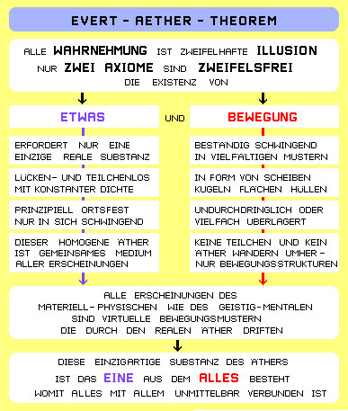
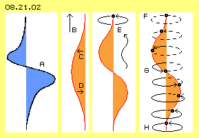
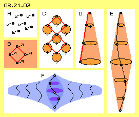
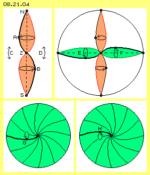
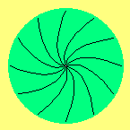
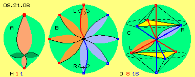
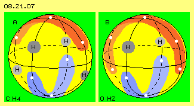
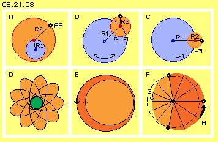
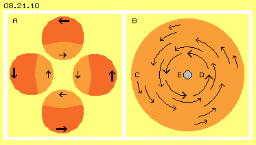
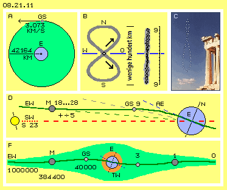

Wissenschaft und Technik
Unsere Sinnesorgane können nur ein schmales Spektrum der Umwelt erfassen. Das Nervensystem kann nur eine Auswahl der Daten aufbereiten. Das Unterbewusste blendet momentan nicht relevante Informationen aus. Das Bewusstsein kann sich zeitweilig nur auf ein Thema fokussieren. Jeder Mensch agiert also nur aus den Eindrücken ausgewählter ´Snapshots´ heraus. Andererseits führt der Verstand pausenlose Selbstgespräche, um sich zu erklären, was wo wie und warum gerade abgeht.
Generelle Erkenntnisse können dabei nur entstehen, wenn aus Einzelfällen die gemeinsamen Merkmale heraus gearbeitet werden. Diese sind zu beschreiben mittels abstrakter Begriffe und im Idealfall kann deren Zusammenhang in knappe Formeln gefasst werden. Eben diese Abstraktion ist Zielsetzung der Wissenschaften und die Anwendung des Wissenszuwachses führte zum hohen Stand heutiger Technik, Wirtschaft und Zivilisation.
In vielen Wissenschaften wurde aber die Abstraktion und Kombinatorik verwendeter Begriffe so weit getrieben, dass sie mit der Logik ´normalen Menschen-Verstandes´ nicht mehr nachvollziehbar sind. Zudem verblieben zahllose physikalische ´Phänomene´, die sich vollkommen widersprüchlich zu den geltenden Regeln verhalten. Darüber hinaus werden ´unbequeme´ Fragestellungen ausgeblendet. Noch immer ist kaum ein Fachbegriff eindeutig definiert. Noch immer können wissenschaftliche Erkenntnisse bestenfalls das ´Wie´ einer Erscheinung erklären, aber niemals das ´Warum´.
Die mangelnde Qualität wissenschaftlicher Arbeiten wird belegt durch das eindeutige Ergebnis der realen Technik: in wenigen Jahrzehnten wurde der schöne blaue Planet in eine Gift-Müll-Halde verwandelt. Offensichtlich weisen die Main-Stream-Wissenschaften wie das damit verbundene Weltbild gravierende Fehler auf bzw. sind absolut untauglich für das Leben auf der Erde. Es müssen dringend neue Ansätze gefunden werden.
Neuer Ansatz notwendig
Die Wissenschaften suchen nach der umfassenden ´Weltformel´. In vielen Kulturkreisen ist diese aber längst bekannt: alles ist eines. Für mich erschloss sich diese Weisheit beispielsweise aus folgenden Überlegungen:
Es gibt real keine ´Farben´. Diese Illusion wird erzeugt durch elektromagnetische Wellen bestimmter Frequenzen. Viele Ereignisse werden als ´physikalische Felder´ bezeichnet. Aber das sind nur fiktive Begriffe zur Beschreibung modellhafter Vorstellungen. Die Erscheinungen selbst haben durchaus reale Wirkung, also müssen sie auch eine absolut reale Basis haben. Oft benutzt wird der abstrakte Begriff ´Energie´, die sich von einer Form in eine andere transformieren lässt. Die Effekte sind jeweils sehr real. Also müssen doch alle Formen von Energie eine gemeinsame reale Basis haben. Eben diesen realen Hintergrund allen Seins gilt es zu benennen.
Die modernen Wissenschaften sind mit ihrem formelhaften Bemühen nach Abstraktion zu weit abgehoben und können damit die reale Welt nicht mehr realistisch beschreiben. Gewiss können wir mit unserem ´beschränkten Horizont´ niemals die absolute Wahrheit erkennen (sofern es diese gäbe). Dennoch sollten wir mit den uns gegebenen mental-geistigen Fähigkeiten ein möglichst getreues Bild der Realität entwickeln. Erst aus einem einigermaßen stimmigen Weltbild heraus können sich die Menschen umwelt-gerecht verhalten. Nur ausgehend von einer tragfähigen Basis werden die Wissenschaften adäquate Erkenntnisse erreichen können. Nur wenn eine Technologie den Erfordernissen und Möglichkeiten dieses realen Hintergrundes entspricht, kann sie wirklich effektiv und natur-gerecht sein.

Nur zwei Axiome
Ausgangspunkt aller wissenschaftlichen Arbeit sollte die Auflistung und exakte Definition aller unterstellten Bedingungen sein. In aller Regel werden viele Parameter als ´selbst-verständlich´ angenommen oder man ist sich gar nicht bewusst, wie viele zusätzliche Voraussetzungen involviert sind. Insofern haben sich moderne Wissenschaften weit entfernt von Wilhelm von Ockham (1285 - 1347). Dessen Prinzip lautet (zeitgemäß formuliert), ´in Hypothesen nicht mehr Annahmen einzuführen als nötig sind, um einen Sachverhalt ausreichend zu beschreiben´.
Somit sollte eine Theorie mit möglichst wenigen Voraussetzungen arbeiten. Das Ergebnis kann nur wertvoll sein, wenn es auf absolut unstrittigen Axiomen basiert. Für einen neuen und besseren Ansatz muss darum auch ´Bekanntes und Bewährtes´ in Frage gestellt werden. Wenn man nun alles Ungewisse ausscheidet, bleiben für mich nur zwei Tatsachen zweifelsfrei bestehen: es gibt ein reales ´Etwas´ und es existiert ´Bewegung´. Wenn man nicht wieder sofort in unverbindliche Abstraktion abheben will, erfordert reale Bewegung logisch zwingend ein ´reales bewegtes Etwas´.
Nur ein Etwas
Daran schließt sich die Frage an, ´wie viele Arten von Etwas´ notwendig sind. Nach Ockhams Prinzip sollte wiederum ein Minimum ausreichend sein: ein einziges Etwas. Ich unterstelle also dieses ´Eine´ als eine ganz reale materielle Substanz. Sie ist sogar die einzig real existierende Substanz im Universum (es gibt daneben keine andere ´Materie´). Auch die weiteren Eigenschaften sind minimalistisch bzw. ´einzig-artig´: diese Substanz ist nur ein einziges Teil. Sie ist eine homogene und lückenlose Einheit. Sie ist nicht elastisch und somit überall von gleicher Dichte.
Gelegentlich werden solche Zustände als Kontinuum oder Plasma bezeichnet. In unterschiedlichen Kulturkreisen gibt es viele Namen für dieses Eine, z.B. Brahna oder Chi. Ich verwende die Bezeichnung ´Äther´ für diese Substanz. Im Gegensatz zum allgemeinen und undifferenzierten Sprachgebrauch ist ´mein´ Äther aber durch vorige klare Eigenschaften exakt gekennzeichnet.
Viele Bewegungsmuster
Alles besteht aus der gleichen Äther-Substanz - aber unendlich viele Möglichkeiten interner Bewegungen sind darin gegeben. Beispielsweise sind vorige diverse Formen von ´Energie´ nur Ausdruck unterschiedlicher Bewegung von Äther im Äther. Vorige ´Photonen´ sind im Äther vorwärts eilende Bewegungsmuster. Elektronen sind in sich geschlossene Bewegung von Äther im Äther, die an ihrem Ort verbleiben oder weiter wandern können. Atome sind komplexere Muster, die als kugelförmige Bewegungseinheiten organisiert sind, ausschließlich aus Äther bestehend und im umgebenden Äther ´schwimmend´. Riesige Ansammlungen von Atomen stellen z.B. die Erde dar. Diese unzähligen Bewegungsmuster aus Äther driften im Äther-Whirlpool der Ekliptik um die Sonne. Dieser Stern ist wiederum nur ein Ort einheitlichen Äthers, der sich allerdings in hektischen Bewegungen differenzierter Art befindet. Nur aus dem aktuellen Bewegungsmuster ergibt sich, was der Äther an einem Ort momentan repräsentiert.
Es gibt also nur eine einzige Substanz und darin unendlich viel Bewegung. Diese geht in unterschiedlichen Mustern vonstatten und kann Einheiten differenzierter Art bilden. Diese ergeben die Illusion materieller Teilchen oder repräsentieren Energie, Felder, Kräfte, Wechselwirkungen und andere physikalische Erscheinungen.
Ein allumfassendes Medium
Nur durch differenzierte Bewegung des ´Einen´ ergibt sich also die ganze Vielfalt von ´Allem´. Das ist total einfach und doch schwer zu akzeptieren, dass man selbst nicht aus ´soliden Teilchen´ besteht, dass einem keine bestimmte Portion Äther ´gehört´, dass man nur als ein flüchtiges Knäuel von Bewegungen durch die Weiten eines allumfassenden Mediums dahin treibt.
Obwohl alle Bewegungseinheiten immer einen fließenden Übergang zum umgebenden Äther aufweisen, erscheinen die Atome hart und können sich nicht durchdringen. Nur diese Erscheinungsformen galten bislang als ´materiell und stofflich existent´. Im Gegensatz dazu galt alles ´Fein-Stoffliche´ als etwas Abstraktes und somit nicht wirklich real existent. Der ´Stoff´ ist aber in beiden Fällen identisch: ganz normaler Äther. Nur das etwas ´feinere´ Schwingen kennzeichnet solche Erscheinungen, die man als mental-seelisch-geistig bezeichnet.
Im Gegensatz zu den ´harten´ Bewegungseinheiten der Atome können sich alle Arten von Strahlung im Äther überlagern. Noch umfassender kann sich ´feinstoffliches´ Schwingen überlagern und andere Bewegungseinheiten durchdringen. Diese ´weichen´ Bewegungsmuster können in engen oder weiten Räumen mit unterschiedlicher Intensität präsent sein. Was bislang als ´esoterisch-spirituelles´ Gespinst abgetan und in nebulös abstrakten Dimensionen gedanklich transzendiert wurde, ist damit ebenso real manifest wie materiell-physikalische Erscheinungen: alles findet im gleichen Medium statt, alles ist mit allem in unmittelbarer Weise verbunden, lediglich differenziert in der Art des Schwingens.
Licht-Äther
Für viele Leser mag das schön und gut klingen, aber zugleich nicht real - eben weil vor hundert Jahren die Vorstellung eines ´Licht-Äthers´ endgültig aufgegeben wurde. Zuvor war man der naiven mechanistischen Auffassung, das Licht erfordere - wie der Schall - ein materielles Medium. Licht ist millionenfach schneller als Schall (300000 km/s gegenüber 300 m/s), also müsste ein Lichtäther entsprechend dichter sein. Daraus ergab sich aber eine unlösbare Problematik: wie sollte ein materieller Körper durch diesen massiven Äther hindurch fliegen und z.B. die Erde mit 30 km/s um die Sonne rotieren können?
Man war Einstein darum höchst dankbar, als er den Äther für obsolet erklärte - und nimmt seinen Widerruf in reiferen Jahren noch immer nicht zur Kenntnis. Heute wird das Thema Äther wieder vermehrt diskutiert - aber diese Problematik besteht noch immer. Erst mit der vorliegenden ´Äther-Physik und -Philosophie´ ist dieses Problem gelöst: es wandern keine materiellen Teilchen durch den Raum, es werden immer nur Bewegungsstrukturen weiter gereicht.
Dieser Prozess ist durchaus analog zum Schall: auch dort bleibt das Medium prinzipiell ortsfest, nur eine Zone von Verdichtung mit anschließender Entspannung (also nur die generelle Struktur eines Bewegungsmusters) wandert vorwärts durch den Raum. Weil das Transport-Medium des Schalls aus Teilchen besteht, wird das Signal gestreut und abgeschwächt. Der ´Licht-Äther´ ist teilchenlos und darum bleibt der Strahl über Lichtjahre gebündelt und von gleicher Stärke.
Bewegungsmuster des Photons

In Bild 08.21.02 ist links bei A das Logo meiner frühen Bücher skizziert, das eine ideale Fluid-Bewegung repräsentieren sollte. Erst viele Jahre später erkannte ich darin das Bewegungsmuster, welches ein Photon auf seinem Weg durch den Äther zeichnet.
Das ganze Universum wird durch diesen lückenlosen Äther gebildet. Es gibt keine Äther-Teilchen, eine bestimmte Position im Äther wird darum nur als ein ´Ätherpunkt´ angesprochen. Benachbarte Ätherpunkte werden hier als ´Verbindungslinien´ gezeichnet. Bei einem Lichtstrahl fliegen keine Photonen als Partikel (bei B nach oben), vielmehr huschen nur ´schraubenförmige Bewegungsmuster´ durch den Äther. Die tangierten Ätherpunkte (rote Kurve) auf dieser Bahn schwingen etwas zur Seite (nach links bei C) und kehren unmittelbar danach an ihren originären Ort zurück (nach rechts bei D).
Wie beim Schall ist eine Hin- und Her-Bewegung notwendig, hier allerdings quer zur Ausbreitungsrichtung. Zudem erfolgt die Bewegung nicht linear in einer Ebene, sondern in einer ´verdrallten´ runden Bahn (E). Die benachbarten Ätherpunkte schwingen im Kreis, allerdings zeitlich versetzt zueinander. Ein Ätherpunkt startet bei F sein Schwingen. Bei G hat sich ein Ätherpunkt bereits weit (in den Bild-Vordergrund) heraus bewegt. Bei H beendet ein Ätherpunkt nach genau einem Umlauf seine Bewegung.
Dieser Prozess wiederholt sich: immer vorn (in Ausbreitungsrichtung, hier oben) starten die Ätherpunkte die schwingende Bewegung und beenden diese kurz danach. Dabei hat sich kein Äther weit bewegt, wohl aber entsteht der Eindruck einer Vorwärtsbewegung. Tatsächlich wandert nur die Struktur des Bewegungsmusters durch den Raum - und erzeugt für uns die Illusion von Licht und Farbe.
Gemeinsames Schwingen

In Bild 08.21.03 sind bei A einige Ätherpunkte schwarz markiert. Wenn sich ein Ätherpunkt nach links bewegt, muss sich aller benachbarte Äther ebenso bewegen. Äther ist eine zusammen hängende Substanz (rot markiert bei B). Man kann darin einige Stellen als (Äther-) ´Punkte´ (schwarz) bezeichnen. Das dient aber nur zur Beschreibung der internen Bewegungen (innerhalb eines beliebigen, fiktiven Bezugssystems). Die Distanzen (rote Linien) zwischen solchen Punkten müssen immer konstant sein. Aller Äther ist kohärent und hat keine abgegrenzten Teilchen. Es gibt damit auch keine variable Dichte. Darum müssen sich alle Punkte benachbarten Äthers parallel bewegen, bei B momentan z.B. nach rechts-oben.
Wenn sich ein Ätherpunkt auf einer kreisförmigen Bahn bewegt, müssen sich alle benachbarten Ätherpunkte synchron dazu bewegen, wie bei C schematisch dargestellt ist. Jeder Ätherpunkt bewegt sich um seinen eigenen Drehpunkt. Kein Ätherpunkt bewegt sich weit vorwärts im Raum, sondern kommt nach kurzer Wegstrecke immer wieder zurück an seinen originären Ort. In diesem Sinne ist Äther ´stationär´. Aller Äther kann immer nur dieses parallele Schwingen ausführen. Im Gegensatz dazu existiert Rotation nur auf der Ebene ´materieller Teilchen´, indem deren Wirbelkomplexe um einen gemeinsamen Drehpunkt driften (wie z.B. bei einem mechanischen Rad oder den Planeten).
Auf engen oder weiten Bahnen
Aller Äther wird überall in allen drei Dimensionen schwingend sein, meist ziemlich chaotisch auf engen Bahnabschnitten, was ´Freier Äther´ geannt wird. Im Gegensatz dazu gibt es lokal auch ein besser geordnetes Schwingen auf weiten Bahnen, was man ´Gebundenen Äther´ nennt. Eine solche Ausweitung ist in diesem Bild bei D skizziert: oben bewegt sich ein Ätherpunkt auf enger Bahn, seine Nachbarn weiter unten auf jeweils größeren Radien. Die Distanzen zwischen den Punkten auf der roten Verbindungslinie bleiben dabei konstant. Ihre Bewegung beschreibt insgesamt die Mantelfläche eines Kegels.
Zu jeder Ausweitung muss eine entsprechende Reduzierung gegeben sein.
Bei E ist ein Doppelkegel skizziert, bei dem nach unten das Schwingen wieder eingeschränkt wird auf den Umfang des umgebenden Freien Äthers. Die Bewegungsmuster des Äthers sind generell dadurch gekennzeichnet, dass mittig die weiteste oder intensivste Bewegung herrscht. Dieses Strukturmerkmal ist auch bei Potential-Wirbeln gegeben, im Gegensatz zur ´Teilchen-Technik´ mit ihren vorherrschend starren Wirbeln mechanischer Räder.
Wirbel-Kern und -Scheibe
Bei diesem Doppelkegel E ist die Verbindungslinie als Spirale eingezeichnet. Auch auf dieser Kurve sind die Distanzen zwischen Nachbarn immer konstant. Die Ätherpunkte schwingen synchron, aber zeitlich versetzt zueinander - so wie oben als Kern der Bewegungsstruktur eines Photons skizziert wurde. Allerdings sind diese Zeichnungen nicht maßstabgetreu. Ich vermute, dass solche Kegel etwa zehntausend mal länger als breit sind: wenn der Radius des mittigen Schwingens ein Millimeter wäre, würde der Ausgleich zum Freien Äther hin zehn Meter lang sein müssen.
In diesem Bild ist bei F dieser Wirbelkern mit der spiraligen Verbindungslinie dunkelblau eingezeichnet. Mit diesem Doppelkegel wird ein Ausgleich der Bewegungs-Intensität in axialer Richtung möglich. Parallel dazu muss der Äther seitlich davon schwingen bzw. müssen auch in horizontaler Ebene die Ausschläge reduziert werden. Dieser Prozess ist hier durch jeweils kleinere Spiralen skizziert. Dieser Ausgleich erfordert auch in der Horizontalen in sich gewundene Bewegungen. Es ist dabei nochmals mehr Äthervolumen involviert. Diese hellblaue Scheibe wird zehn oder hundert mal breiter als hoch sein. Ein Photon ist weder ein Teilchen noch eine Welle - sondern ein Bewegungsmuster in Form einer relativ weiten Scheibe schwingenden Äthers - und nur diese Struktur wird durch den Äther vorwärts weiter gereicht.
Schwingende Äther-Kugel

In Bild 08.21.04 sind einige schwarze Ätherpunkte eingezeichnet, die bei N, Z und S ortfest sind. Auf der Verbindungslinie dazwischen befindet sich ein Ätherpunkt A, der auf einer Kreisbahn schwingend ist und sich momentan etwas links von der gestrichelten Mittelachse befindet. Auch unterhalb dieses Zentrums Z ist der Äther schwingend. Die Verbindungslinie zu S beschreibt den Mantel eines Doppelkegels. Ein Ätherpunkt B befindet sich momentan etwas rechts von der Mittelachse.
Dieses Schwingen ist also um 180 Grad phasen-versetzt. In der dargestellten Position befindet sich links-oben momentan ´zu viel´ und links-unten ´zu wenig´ Äther. Zum Ausgleich müsste dort also momentan auf der linken Seite bei C ´etwas Äther´ nach unten schwingen. Umgekehrt müsste auf der rechten Seite bei D der Äther etwas nach oben gerückt werden. Im zeitlichen Ablauf müsste also eine Schaukelbewegung statt finden.
Es finden im Äther keine linearen Bewegungen statt, auch keine Hin-und-Her-Bewegung mit zeitweiligem Stillstand. Es ist immer aller Äther in schwingender Bewegung. Hier findet z.B. die notwendige Ausgleichsbewegung wiederum durch ein kreisendes Schwingen statt, wie in diesem Bild oben rechts skizziert ist. Die gestrichelten Linie kennzeichnet die äquatoriale Ebene. Auf der linken Seite ist der dortige Äther E momentan etwas unterhalb positioniert und entsprechend ist der Äther F auf der rechten Seite etwas angehoben. Synchron zum Schwingen in axialer Richtung (der beiden roten Doppelkegel) erfolgt ein analoges Schwingen in der horizontalen Ebene (hier im Bereich der beiden grünen Doppelkegel).
Rundum am Äquator ist aller Äther schwingend, jeweils wieder um 180 Grad versetzt an den gegenüber liegenden Seiten. Die Bewegung läuft praktisch wie eine Welle um das Zentrum. Unten in diesem Bild sind zwei Querschnitte durch die äquatoriale Ebene skizziert. Vom Zentrum ausgehend sind Verbindungslinien eingezeichnet. Ganz außen sind deren Ätherpunkte praktisch ortsfest. Dazwischen schwingen sie auf zunehmend weiteren Radien, wobei der Ätherpunkt G sich momentan unterhalb der 9-Uhr-Position und etwas später bei H etwas oberhalb dieser Position befindet. Mit dieser Animation wird dieses rundum verlaufende Schwingen verdeutlicht.

Auch im Raum zwischen der N-S-Achse und der äquatorialen Ebene findet ein analoges Schwingen statt (ein Längsschnitt durch die Mittelachse ist praktisch identisch mit diesem Querschnitt durch den Äquator). Da der Äther überall gleiche Dichte aufweist und überall in sich zusammen hängend ist, müssen immer alle Bewegungen in alle Richtungen insgesamt ausgeglichen sein. Dieses simple Bewegungsmuster ermöglicht ein intensives Schwingen auf relativ weiträumigen und geordneten Bahnen innerhalb einer Kugel. Alle Bewegungen sind intern ausgeglichen und nach außen hin ist alles Schwingen so weit reduziert, dass ein nahtloser Übergang zum Freien Äther gegeben ist.
Elektron und Wasserstoff
Dieses klare und einfache Bewegungsmuster bildet eine lokal begrenzte Bewegungs-Einheit. Auf diese treffen von außen vielfältige Störungen, so dass die Oberfläche z.B. durch Strahlung momentan etwas einwärts drücken wird. Betroffene Verbindungslinien werden in einer Richtung zusammen gedrückt - und müssen notwendigerweise quer dazu weiter ausschwingen. Gerade dieser äußere Druck stabilisiert solche Bewegungseinheit.
Schon der normale Freie Äther mit seinen engen chaotischen Bewegungen bewirkt einen allgemeinen ´Ätherdruck´, durch welchen andersartige Bewegungen ´aufgerieben´ - oder eben in passende Bewegungen auf geordneten Bahnen zurecht gerückt werden. Das vorige Muster ist offensichtlich eine optimale und langlebige Bewegungsform des Äthers. Diese Erscheinung ist mit Abstand die häufigste im Universum. Die gängige Bezeichnung ist ´Elektron´. Wie gesagt: es besteht aus ganz normalem Äther, es ist nur gekennzeichnet durch die spezielle interne Bewegung. Wie das Photon ist auch ein Elektron kein Teilchen. Es wandert auch keine Ätherkugel vorwärts im Raum, sondern nur diese Bewegungsstruktur wird im Äther nach vorn weiter gegeben.
In Bild 08.21.06 ist links bei A das gleiche Bewegungsmuster skizziert. Allerdings ist dort nicht alles Schwingen gleichförmig. Das Zentrum der Bewegungen ist außer-mittig, so dass es einen Bereich weiten Schwingens gibt (oben) und einen mit nur geringer Bewegungsintensität. Diese Struktur hat einen dominanten Pol (während der andere ´verkümmert´ ist). Diese ´birnen-förmige´ Bewegungseinheit (hellgrün) nennt man normalerweise ´Wasserstoff´.
Dieses 1-wertige Atom H mit der Atommasse 1 passt nicht wirklich in das Periodensystem der chemischen Elemente. Atomarer Wasserstoff ist vielmehr ein etwas ´deformiertes´ Elektron. Eine symmetrische und ausgewogene Einheit ergibt sich erst aus der Kopplung von zwei Atomen, dem ´molekularen Wasserstoff´ H2. Andererseits kann sich der atomare (´einpolige´) Wasserstoff optimal an andere Atome ´andocken´ (siehe unten). In den Sternen und Gasplaneten, in den Gaswolken der Galaxien und des intergalaktischen Raumes stellt Wasserstoff den dominanten Anteil aller ´Masse´ des Universums dar. Auf der Erde ist Wasserstoff vorwiegend in Verbindungen vorhanden und das entscheidende Element allen Lebens.
Atome

Nach gängiger Lehre besteht ein Atom weitgehend aus ´Nichts´, nur ein paar materielle Elementarteilchen sollen eine Hülle und einen Kern bilden. Die hierbei erforderlichen Kräfte und involvierten Voraussetzungen sind ungeklärt. Vergeblich sucht man bislang nach dem Higgs-Teilchen, das auf mysteriöse Weise den Zusammenhalt garantieren soll. Wenn heute von ´Elektronenwolken´ gesprochen wird, bleiben die Vorstellungen ebenso vage. Immerhin kennt man inzwischen viele Sub-Elementar-Teilchen. Allerdings sind deren Lebenszeiten extrem kurz und diese ´Quarks´ wechseln fortwährend von einer Form in andere. Das können also keine ´materielle Teilchen´ sein. Vielmehr wurden dabei nur schemenhaft einige Bahnabschnitte der Ätherbewegungen innerhalb der Wirbelstrukturen von Atomen erkannt.
Die Lehre vom Aufbau der Atome wie auch die diversen (oder gar kontroversen) Quanten-Theorien sind rein hypothetische Erklärungsversuche, welche die Realität garantiert nicht adäquat abbilden können. Real gibt es keine Protonen und Neutronen und keine subelementaren ´Teilchen´. Nur wenn dieser Äther als eine reale Substanz unterstellt wird, ergeben sich aus dessen Möglichkeiten und Notwendigkeiten interner Bewegungen einsichtige Modelle der atomaren Erscheinungen.
Wie in Bild 08.21.06 mittig bei B skizziert ist, sind einige der vorigen Wirbel (hier repräsentiert durch Doppelkegel) konzentrisch angeordnet und ergeben eine kugelförmige Bewegungseinheit. Zwei solcher ´Schwingungs-Spindeln´ reichen z.B. vom Nord- zum Südpol. Von oben-außen betrachtet erfolgt das Schwingen L hier z.B. linksdrehend. Die gleiche Drehrichtung stellt von unten gesehen aber ein rechtsdrehendes Schwingen R dar.
Ein Atom weist keine ´Elektronenhülle´ auf. Das interne Schwingen ergibt aber ´Augen´ an der kugelförmigen Aura (grün). Eine optimale Struktur ergibt sich bei paariger Anordnung ihres ´Spins´. Hier sind z.B. vier links-drehende (rot) und vier rechts-drehende (blau) Spindeln eingezeichnet sowie am Umfang deren Augen markiert.
Die Augen auf der Oberfläche bzw. die Wirbel innerhalb der Kugel sind möglichst gleichförmig verteilt. In diesem Bild rechts bei C ist ein Auge jeweils am Nord- und Südpol eingezeichnet und zwei mal drei Augen bilden praktisch einen Tetraeder (jeweils durch ein gelbes Dreieck hervor gehoben). Nur auf einer Diagonalen ist eine links- und rechtsdrehende Spindel eingezeichnet (L, rot und R, blau). Dieses Beispiel stellt die Bewegungs-Struktur eines Sauerstoff-Atoms (O, Ordnungszahl 8, Massezahl 16) dar.
Moleküle

Auf der Kugeloberfläche gibt es keine gleichförmige Verteilung des Spins, vielmehr ergeben sich zwangsweise ganze Bereiche mit links- bzw. rechts-schwingender Bewegung. In Bild 08.21.07 ist links bei A als Beispiel ein C-Atom (Ordnungszahl 6, Massezahl 12) dargestellt. Am Nordpol bilden drei Augen einen linksdrehenden, roten Bereich. Am Südpol gibt es quer dazu einen rechtsdrehenden, blauen ´Bergrücken´.
Dazwischen gibt es ´Senken´ mit geringerem Schwingen bzw. ausgleichenden Bewegungen. Jeweils am Ende voriger Bergrücken sind Bereiche vorhanden, in denen sich beispielsweise Wasserstoff-Atome einnisten können. Diese Andock-Bereiche sind hier als graue Flächen H gekennzeichnet. Insgesamt repräsentiert dieses Beispiel die Bewegungs-Struktur des einfachen Kohlenwasserstoffes CH4, also Methan.
In diesem Bild ist rechts bei B beispielsweise eine Variante des Sauerstoff-Atoms dargestellt. Über den Nordpol bilden fünf Augen einen lang-gestreckten Rücken linksdrehenden Schwingens (rot). Am Südpol liegt quer dazu ein rechtsdrehender Rücken von nur drei Augen (blau). An dessen beiden Enden verbleiben nur noch zwei Andock-Möglichkeiten, die hier wieder als graue Flächen H markiert sind. Insgesamt wird damit die Struktur des bekannten H2O repräsentiert.
Auch Moleküle bestehen somit aus ganz normalem Äther, der lokal in sich stimmige Bewegungen ausführt. Die ´chemische Verbindung´ kommt nur durch den generellen äußeren Äther-Druck zustande. Je nach ´Pass-Genauigkeit´ der beteiligten Atome sind die Verbindungen mehr oder weniger stabil (z.B. ohne vermeintliche Anziehungs- bzw. Abstoßung von vermeintlich positiver oder negativer Ladungen usw.).
Trägheit, Masse, Härte, Energie-Konstanz
Die Atome haben keine ´Masse´, weil sie aus dem überall gleichen Äther ´bestehen´. Allerdings sind die internen Bewegungsstrukturen sehr unterschiedlich. Hinsichtlich einer räumlichen Verschiebung sind sie darum mehr oder weniger ´sperrig´ - und ebenso gegenüber einer Änderung der aktuellen Bewegung im Raum. Die Komplexität interner Bewegung bzw. diese Sperrigkeit ergeben die Erscheinung von ´Trägheit´ bzw. von ´Masse´.
Die Atome haben nach außen keine scharfe Abgrenzung. Auch um die Moleküle insgesamt bildet sich eine Schicht ausgleichender Bewegungen. Diese Aura ist nicht total starr, sondern bildet einen fließenden Übergang zum Freien Äther. Diese ´Bewegungsknäuel´ werden pausenlos durch die Umgebung beeinflusst, was z.B. das bekannte ´Zittern´ der Atome ergibt. Im Zentrum laufen alle ´Wirbel-Spindeln´ zusammen und die Bewegungen müssen dort synchron zueinander erfolgen. Dort ist nur minimaler Spielraum vorhanden, besonders bei ´gewichtigen´ Atomen. Nur darum erscheinen die Atomkerne als harte und schwere ´Teile´ und können sich gegenseitig nicht durchdringen. Sogar Strahlung wird am harten Kern reflektiert - und dabei können sogar Abschnitte der internen Bewegungen erkannt werden - die in den Quanten-Theorien als Quarks gedeutet werden.
Wenn man das erste Mal mit diesen Vorstellungen konfrontiert wird, kann man sich kaum vorstellen, dass in dieser lückenlosen, homogenen Substanz überhaupt Bewegung möglich sein sollte. Sobald irgendwo eine Bewegung gestartet würde, müssten im Umfeld korrespondierende Bewegungen zugleich starten. Dem ´Anfahren´ eines einzigen Atoms oder gar der Erd-Rotation stünde praktisch unendlich großer Widerstand entgegen. Umgekehrt aber gilt auch: wenn irgendwo Äther in Bewegung ist, kann diese ´kinetische Energie´ nie mehr verloren gehen. Die Konstanz aller Energien ist das oberste physikalische Gesetz. Sie ist in unserer Erfahrungswelt ´elastischer Teilchen´ aber niemals möglich, sondern kann nur innerhalb des hier definierten Äthers existieren.
Überlagerte Bewegung
Im heutigen Zustand ist der Äther nirgendwo still stehend, sondern überall in Bewegung (der aufmerksame Leser hat bemerkt, dass dies eine bislang nicht benannte Voraussetzung ist - wie tausendfach in anderen Theorien üblich). Ich kann und will hier nicht darüber spekulieren, warum und wie diesem einen Stück ´Wackel-Pudding´ erstmals ´Leben eingehaucht´ wurde. Heute jedoch ist aller Äther auf ´quanten-kleinen´ Bahnen schneller als mit Lichtgeschwindigkeit permanent in allen drei Richtungen des Raums schwingend. Insofern sind immer nur geringfügige Änderungen der Bahnen notwendig, damit obige lokale Bewegungsmuster auftreten oder im Raum umher wandern können.

Tatsächlich ist die Bewegungsvielfalt praktisch unbegrenzt. In Bild 08.21.08 sind nur wenige Möglichkeiten skizziert, die sich aus der Überlagerung von nur zwei Kreis-Bewegungen und nur in einer Ebene ergeben. Bei A existiert ein kreisendes Schwingen mit Radius R1 (blau). Um das Ende dieses ´Uhrzeigers´ schwingt eine zweite Bewegung mit Radius R2 (rot). Der schwarze Ätherpunkt AP bewegt sich dann auf der aus dieser Überlagerung resultierenden Bahn. Bei B ist schematisch angezeigt, dass die Länge beider Radien variabel ist. Der Drehsinn beider Bewegungen und auch die Drehgeschwindigkeit kann gleich oder unterschiedlich sein. Die oben diskutierten Doppelkegel ergeben sich, indem z.B. einer dieser Radien länger und danach wieder kürzer wird.
Generell kann damit eine kreis-runde Bewegung übergehen in eine elliptische Bahn. Die Bahnen können auch Schleifen bilden, die auch um ein Zentrum schwenken und ´Rosetten-Bahnen´ ergeben können, wie bei D skizziert ist. Ein Ätherpunkt kann wechseln von einer engen zu einer weiten Schleife (und umgekehrt), wie bei E angezeigt ist. Es ist sogar ein fließender Übergang der Drehrichtung möglich. Generell müssen sich alle benachbarten Ätherpunkte in diesem kohärenten Medium analog verhalten. Dennoch können selbst im engen Volumen der Atome mehrere Bereiche gegenläufig drehender Wirbel schwingen - inklusiv der Übergangsbereiche für das Andocken von Elektronen oder anderer Atome.
Schlagende Bewegung
Besondere Bedeutung kommt der bei C gezeichneten Überlagerung zu: der Radius R1 ist mindestens drei mal so lang wie R2. Beide Drehungen sind gleichsinnig. Beide durchlaufen gleiche Winkel je Zeiteinheit. Daraus ergibt sich die bei F skizzierte Bahn.
Ein Ätherpunkt (schwarz) bewegt sich während einer Zeit-Hälfte relativ langsam auf einer relativ kurzen und eingedrückten Wegstrecke, wie hier von oben nach unten und durch den hellroten Sektor G gekennzeichnet ist. Während der zweiten Zeit-Hälfte fliegt der Ätherpunkt weiter hinaus nach rechts, auf einer längeren Wegstrecke und damit relativ schnell, wie hier als dunkelroter Sektor H markiert ist. Die Animation verdeutlicht diesen Prozess.
Es gibt im Äther keine vollkommen gleichförmige Bewegungen. Im Äther sind immer alle Bewegungen mehrfach überlagert, immer in allen drei Richtungen des Raumes zugleich (während hier die Bewegungen nur auf einer Ebene skizziert sind). Jede Überlagerung hat unabdingbar zur Folge, dass es je Zeiteinheit kürzere und längere Bahnabschnitte gibt, damit auch unterschiedliche Geschwindigkeiten und somit fortwährend Beschleunigung und Verzögerung.
In diesem Bild bei F ist die maximale Geschwindigkeit rechts-aufwärts gegeben, wie durch den dicken Pfeil H markiert ist. Die Geschwindigkeit wird reduziert auf dem oberen Bahnabschnitt. Der Ätherpunkt bewegt sich mit geringer Geschwindigkeit links-abwärts, wie durch den dünnen Pfeil G markiert ist. Alle benachbarten Ätherpunkte müssen sich ziemlich analog dazu verhalten, so dass der Äther dieses Bereiches eine ´schlagende´ Bewegungskomponente aufweist.
Äther-Whirlpools

Weil aller Äther lückenlos zusammen hängend ist, müsste dieses Schlagen also quer durch das ganze Universum verlaufen. In Bild 08.21.10 ist links bei A die Alternative skizziert: dieses Schlagen bleibt ein lokal begrenztes Muster, wenn es im Kreis herum verläuft. Es würde damit ein ´Whirlpool´ von gleichartigem Schwingen entstehen. Darin ´fließt´ weiterhin kein Äther weiträumig dahin, es findet hier z.B. immer nur ein schnelleres Schwingen gegen den Uhrzeigersinn statt, gefolgt von einem langsameren Zurück-Schwingen im Uhrzeigersinn. Alle Bewegungen finden noch immer auf ´quanten-kleinen´ Dimensionen statt mit einer minimalen Asymmetrie, allerdings in rascher Folge mit Über-Lichtgeschwindigkeit.
In diesem Bild ist rechts bei B ein Whirlpool skizziert. Außen gibt es einen gleitenden Übergang zum Freien Äther. Wie durch die Pfeile angezeigt, ist am Rand die schlagende Komponente gering und wird nach innen zunehmend stärker (siehe Pfeile C bis D). Das Schlagen kann nicht unbegrenzt ansteigen, sondern wird zum Zentrum E hin wieder reduziert (wie bei jedem Potentialwirbel). Objekte dieses Bewegungsmusters sind lokal begrenzt, wenngleich sie von riesiger Dimension sein können. Bekannt sind sie z.B. unter dem Namen ´Milchstrasse´ oder Sonnensystem bzw. ´Ekliptik´. Weniger bekannt ist, dass auch das ´System-Erde´ einen Radius von einer Million Kilometer hat.
Keine Masse-Anziehungs-Kräfte
Wie oben angesprochen wurde, wird jedes Atom durch seine Umgebung beeinflusst. Innerhalb eines Äther-Whirlpools wird das Wirbel-Knäuel des Atoms deformiert, durch das rasche Vorwärts-Schlagen etwas stärker als durch das sanftere Rück-Schwingen. Durch diesen sanften Schub driften alle ´materielle Teilchen´ um das Zentrum herum: die Sterne in der Milchstrasse, die Planeten um die Sonne, der Mond um die Erde.
Abhängig von der Stärke der schlagenden Komponente fliegen sie nahe beim Zentrum sehr viel schneller als weiter draußen, in jedem Fall aber im Kreis herum. Wie ein Stück Holz in einer Strömung driften alle Himmelskörper rein passiv innerhalb des jeweiligen Äther-Whirlpools. Dazu sind keine Masse-Anziehungskräfte erforderlich (deren Funktionsweise ohnehin niemals logisch zu erklären wäre). Damit sind zugleich alle Berechnungen der vermeintlich notwendigen Massen hinfällig: die Erde braucht keinen flüssigen Eisenkern, die Sonne und Gasplaneten weisen viel geringere Dichte auf, es gibt keinen extrem hohen Druck in deren Kern.
Tanzende Satelliten
Die Physik präsentiert sich gern als eine absolut exakte Wissenschaft, wobei Keppler, Newton und Einstein hinsichtlich der Gravitation wesentliche Beiträge geliefert haben. In der Astronomie werden die Berechnungen allerdings erst einigermaßen stimmig, wenn man zur bekannten Masse noch neun mal mehr ´dunkle Materie´ hinzu nimmt - was immer das sein sollte. Zweifelsfrei sind damit aber alle bekannten Formeln und Vorstellungen wertlos. Gewiss ist es nicht ganz einfach, über Millionen Lichtjahre ins All hinaus zu rechnen. Direkt in unserer Umgebung aber gibt es geradezu ´Labor-Bedingungen´ für den Beweis des Äthers und dieser Whirlpools. In Bild 08.21.11 sind einige Sachverhalte skizziert (nicht maßstab-getreu).
Bei der weltweiten Kommunikation sind geostationäre Satelliten (GS, grau) ein wichtiges Element. Sie fliegen in 42164 km Entfernung vom Mittelpunkt der Erde (E, blau) mit 3,073 km/s über dem Äquator im Drehsinn der Erde. Dann entspricht die Zentrifugalkraft exakt der Gravitationskraft. Sie ´stehen´ dann ortsfest an dieser Stelle am Himmel. Aber leider verhalten sie sich keinesfalls ´gesetzes-treu´. Natürlich könnten jahreszeitliche Einflüsse je nach Sonnenstand gegeben sein. Natürlich könnten monatliche Schwankungen in Abhängigkeit vom Mond auftreten. Auch unregelmäßige Abweichungen aufgrund des ´Sonnenwindes´ wären möglich.

Nach gängiger Lehre ist aber überhaupt nicht zu verstehen, warum geostationäre Satelliten täglich auf einer speziellen Bahn tanzen und diese auch noch abhängig vom Längengrad ihrer Position ist. Bei 0 und 180 Grad beschreiben Satelliten eine acht-förmige Bahn, bei 90 Grad Ost und West pendeln sie nur auf- und abwärts (siehe mittig im Bild bei B). Dazwischen fliegen die Satelliten auf Bahnen zwischen diesen Mustern. Exakt sind die Bahnen aber immer nur nach einer Stunde Verzögerung (also bei 15 und 105 sowie 75 und 165 Grad). Die täglich wiederkehrende Abweichung vom geostationären Ort ist ´nur´ wenige hundert Kilometer bzw. etwa neun Grad. Am vorbestimmten Ort können die Satelliten nur durch Steuermanöver gehalten werden. Nach einigen Jahren ist die Energie verbraucht und die Satelliten werden etwas höher auf einem ´Friedhof-Orbit´ abgestellt - wo sie unablässig weiter tanzen.
Die Erde tanzt als Satellit in ähnlicher Weise um die Sonne. Von der Erde aus gesehen (aus umgekehrter Sicht also) beschreibt die Sonne eine analoge ´Analemma-Kurve´. In diesem Bild bei C ist der Sonnenstand in Griechenland dargestellt, jeden Tag zur gleichen Welt-Uhrzeit. Je nach Ort und Zeit ergibt sich eine andere Kurve (was z.B. beim Bau von Sonnenuhren zu berücksichtigen ist). Das Auf-und-Ab ergibt sich aus der Neigung der Erdachse. Das Vor-und-Zurück wird begründet mit der elliptische Bahn der Erde um die Sonne - aber die Realität widerspricht Keplers- und Newtons Axiomen und Gesetzen. Die Scheitelpunkte dieser Bahnen liegen z.B. jeweils später als die Winter- und Sommer-Sonnwende.
Whirlpool der Sonne und Erde
Vorige beide Kurven haben eine gemeinsame Ursache: beide Satelliten driften innerhalb überlagerter Whirlpools. Die Erde dreht mit dem Sonnensystem periodisch gleichsinnig oder gegensinnig zur galaktischen Bewegung. Nur darum fliegt die Erde schneller oder langsamer auf einer ungleichförmigen Bahn durch den Raum. Der Mond und die künstlichen Satelliten driften einerseits im Whirlpool der Erde und dabei phasenweise im oder gegen den Drehsinn des Sonnensystems. Dieser Sachverhalt ist im Bild mittig bei D skizziert. Einige Daten sind darunter bei E aufgeführt.
Die Ekliptik ist als gestrichelte Linie zwischen der Sonne (S, gelb) und der Erde (E, blau) eingezeichnet. Die Erdachse ist um etwa 23 Grad geneigt, somit auch gegenüber dem Sonnen-Whirlpool (SW). Der Mond (M, dunkelgrau) driftet im Erde-Whirlpool (EW, grüne Linie). Seine Bahnebene ist um 5 Grad gegenüber der Ekliptik geneigt. Relativ zur äquatorialen Ebene (AE, blau gestrichelt) ´taumelt´ der Mond also in einem Bereich zwischen 18 und 28 Grad. Auch die geostationären Satelliten (GS, hellgrau) driften im Erde-Whirlpool und schlingern dabei täglich um obige 9 Grad nord- bzw. südwärts zum Äquator.
Natürlich wird auch die Erde von der schlagenden Komponente ihres Whirlpools tangiert bzw. umgekehrt: die Erde rotiert um ihre Achse nur weil sie das Zentrum dieses ´Wirbelsturmes´ darstellt. Der Radius dieses Systems wird bei rund einer Million Kilometer liegen. Bei etwa 384400 km schiebt dieses Schlagen den Mond mit etwa 1 km/s im Kreis herum. Bei etwa 40000 km Höhe ist der Schub vermutlich am stärksten, womit die vorigen Satelliten ohne eigenen Antrieb mit rund 3 km/s um die Erde schweben. Von dort einwärts wird die Drehgeschwindigkeit zum Erdmittelpunkt linear reduziert (wie bei allen Wirbeln). Letztlich driftet die Erde selbst mit etwa 30 km/s um die Sonne.
Die Whirlpools der Erde und Sonne überlagern sich. Wann immer der Mond oder Satelliten sich zwischen Erde und Sonne befinden, fliegen sie gegen den Drehsinn des Sonnen-Whirlpools. Der Mond kommt dort z.B. nur mit 29 km/s vorwärts und ein Satellit nur mit 27 km/s. Umgekehrt addieren sich die Geschwindigkeiten auf der ´Nacht-Seite´ bis auf 31 und 33 km/s. Die Erde fliegt mit ihren konstanten 30 km/s vorwärts, während der Mond und Satelliten auf der ´Innenseite´ zurück bleiben und ´außen herum´ wieder voraus eilen. Bei geostationären Satelliten geschieht das täglich. Sie scheinen damit gegenüber der konstant um ihre Achse drehenden Erde voraus zu eilen bzw. zurück zu bleiben.
Achse, Magnetfeld, Ladung
Zur Sonne hin ist das Äther-Schlagen also immer etwas reduziert und auf der sonnen-abgewandten Seite etwas erhöht. Die starre Erde kann aber nur mit gleichförmiger Geschwindigkeit drehen. Der umgebende Äther ´zerrt und drückt´ darum permanent an der Erd-Oberfläche. Die Erde kann diesen ungleichen Geschwindigkeiten nur ausweichen durch die Neigung ihrer Drehachse. Nur aufgrund dieser generellen Gesetzmäßigkeit der Äther-Whirlpools weisen die Sterne und Planeten eine Neigung gegenüber ihren Whirlpools auf. Umgekehrt zieht natürlich der Erd-Äquator den angrenzenden Äther in seine Dreh-Richtung. Daraus ergibt sich generell eine S-förmige Kontur der Whirlpools (wie auch schon oben in Bild 08.21.04 bei E und F ausgeführt wurde).
Der Äther kann sich sehr variabel bewegen, wogegen die Atome der Erde in ihrem starren Verbund gleichförmig um die Erdachse rotieren müssen. Die Wirbel-Knäuel der Atome an der Erd-Oberfläche bewegen sich relativ zum angrenzenden Äther sehr unterschiedlich: mit maximaler Geschwindigkeit am Äquator, mit minimaler Geschwindigkeit an den Polen. Im Umfeld der Erde müssen im Äther also vielfältige Bewegungen ausgeglichen werden.
Wesentlichen Einfluss übt darüber hinaus der mehr oder weniger regelmäßig eintreffende ´Partikelstrom des Sonnenwindes´ aus. Darum gibt es über der Erdoberfläche einen Bereich sehr turbulenter Wirbel (TW, rot markiert). Diese Bewegungsmuster des Äthers werden normalerweise ´irdisches Magnetfeld´ genannt (das überhaupt nichts zu tun hat mit der vermeintlichen Funktionsweise eines elektrischen Generators).
Ein leichter Wind ergibt ein ´Gekräusel´ auf einer Wasseroberfläche. Analog dazu ergeben diese Äther-Turbulenzen im Umfeld der Erde mehr oder weniger geordnete ´Bewegungsfelder´, z.B. in Form von Wirbelsträngen. Über der Erde kann eine Schicht aus feuchter Luft liegen und als Tau am Boden nieder schlagen. Analog kann sich ´elektrische Ladung´ in Sphären um die Erde sammeln und als Niederschlag die negativ geladene Erdoberfläche ergeben (deren Bedeutung noch viel zu wenig beachtet wird, z.B. als alternative Energie-Quelle).
Wunder über Wunder
Zu all diesen ´Phänomenen´ hat die gängige Lehre keine wirkliche Erklärung. Trotz aller Formeln und exakter Berechnungen bleiben die physikalischen Sachverhalte eigentlich ´wahre Wunder´. Einleuchtende und logisch stringente Erklärungen ergeben sich erst, wenn die Existenz eines Äthers unterstellt wird - aber nur inklusiv der oben definierten Eigenschaften.
Hier konnten nur in knapper Form angesprochen werden, was in zwanzig Kapiteln meiner Website bzw. auf dreihundert Buchseiten zu diesem ´Etwas in Bewegung´ ausgeführt wurde. Einige ´physikalische Wunder´ mehr sind dort dargestellt und beispielsweise folgende Fragen beantwortet:
Warum rotieren Sterne und Gasplaneten am Äquator schneller als ihre Polregionen? Warum bewegt sich die Jupiter-Oberfläche in dieser chaotischen Weise? Warum können Monde retrograd drehen? Was ist die wahre Ursache der Gezeiten? Warum ist Gravitation keine universumweit wirksame Kraft? Wie wirkt die individuelle Gravitation im nahen Umfeld von Himmelskörpern? Woher stammt die enorme Energie bei Atom-Bomben? Wie funktioniert ´Emergenz´ aus Sicht des Äthers´? Welche Bedeutung haben ´ätherische Membranen´?
Wie könnte das Material der Ufos beschaffen sein? Wie könnte man weite Distanzen im Weltall überbrücken? Nicht zuletzt: Was ist eine Aura? Wie nimmt man ´Lebensenergie´ auf? Wie funktionieren Sheldrakes ´morphogenetische Felder´? Und einiges mehr.
Das Thema Äther wurde bislang vielfältig diskutiert, aber immer als eine irgendwie ungewisse, abstrakte Fiktion. Erst mit diesen exakten Definitionen erhält der Äther eine ´substantielle Realität´. Natürlich ist es ziemlich anstrengend, sich in diese neue Weltsicht hinein zu denken. Dafür ergeben sich nun logisch verständliche Erklärungen zu vielen Erscheinungen. Hier wurden bislang erst einige Problemfelder angesprochen - und analog dazu könnte nun jeder auf dieser Basis nach weiteren Problem-Lösungen suchen.
Evert / 05-05-2011